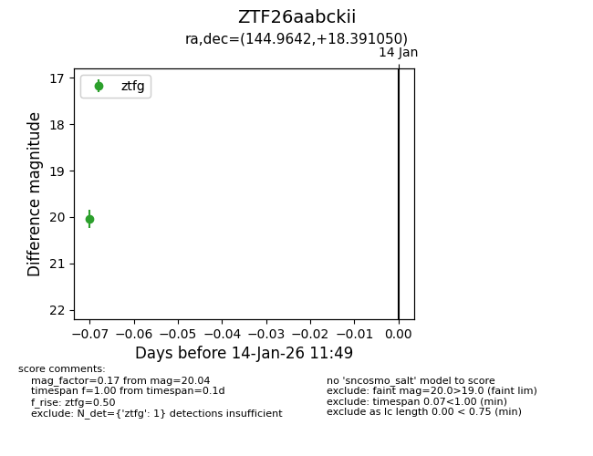
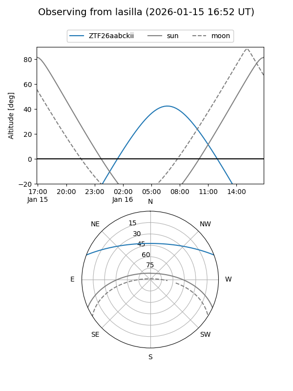
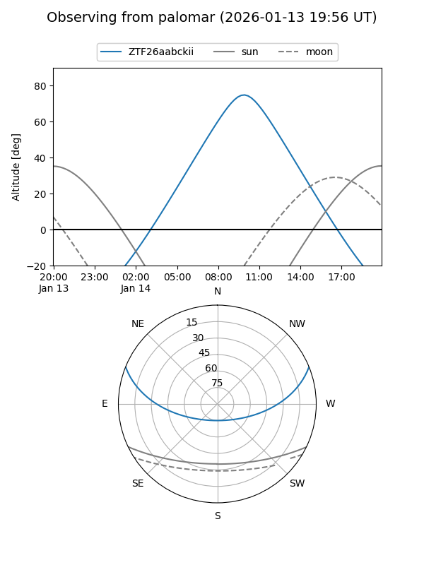

ZTF26aabckii
Target ZTF26aabckii at 2026-01-14 11:50
Aliases and brokers:
FINK: link
Lasair: link
ALeRCE: link
alt names
ZTF26aabckii (ztf,fink_ztf)
Coordinates:
equatorial (ra, dec) = 144.9642,+18.39105
equatorial (HMS+DMS) = 09:39:51.42,+18:23:27.78
galactic (l, b) = (213.6908,+45.24405)
Flags:
Photometry:
last ztfg=20.04
1 ztfg detections
Lightcurve

Visibility


Additional plots